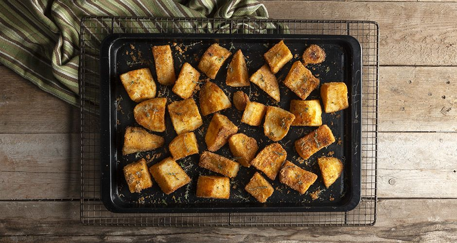

Home
Crunchy Roast Potatoes

Description
Oven-baked potatoes in a unique recipe, where the crispness of the result is incredible.
Ingredients
- 1 kilo potatoes
- 2 lemons
- 1 1/2 liter water
- 1-2 tablespoon(s) thyme, fresh
- 2 clove(s) of garlic
- 70 g olive oil
- 30 g semolina, fine
- salt
- pepper
- 1 teaspoon(s) paprika, sweet
- chicken burger patties, to serve
Steps
- Preheat oven to 200* C (390* F) Fan.
- Place the baking pan you choose to use in the oven.
- Score each piece with a knife in 2-3 places.
- Transfer to a pot and add the juice of 2 lemons plus the actual squeezed lemons used.
- Add salt, pepper and 1 ½ liters of water and bring to a boil.
- Boil for 10 minutes, until the potatoes soften a little.
- When ready, drain, remove the lemons and allow all of the steam to evaporate from the potatoes. In this way they will release all of the moisture.
- In a bowl, add the potatoes, olive oil, thyme, whole garlic cloves, paprika, semolina, salt and pepper.
- Shake the bowl to combine all of the ingredients.
- Carefully remove the hot baking pan from the oven and immediately add the potatoes.
- Spread them out and quickly place the baking pan back into the oven.
- Bake for 30-40 minutes.
- Turn the potatoes every 10 minutes so that they can become golden evenly.
- When ready, remove from oven and serve.